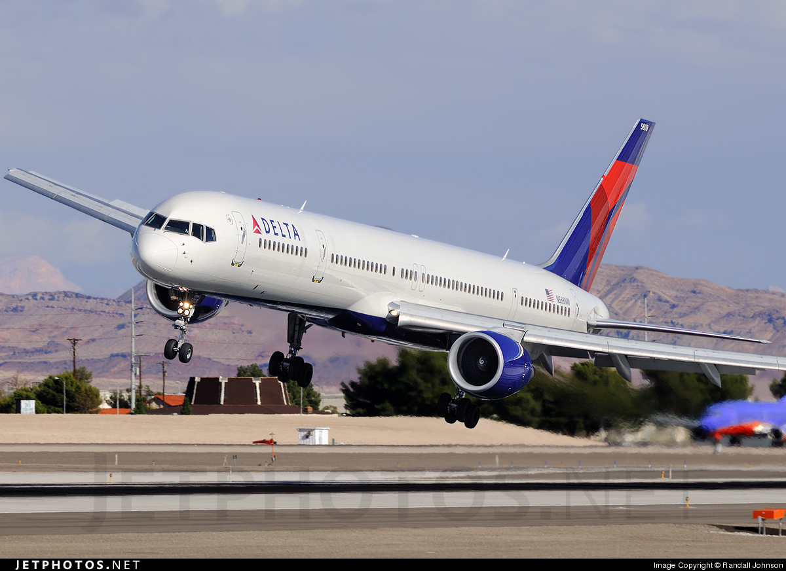
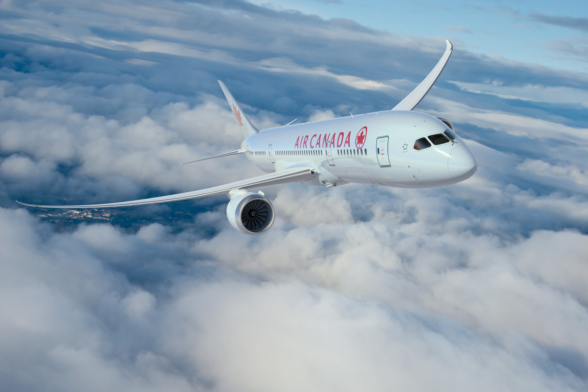

The Boeing 737 Next Generation, commonly abbreviated as 737NG, is the name given to the
−600/-700/-800/-900series of the Boeing 737 airliner.
It is the third generation derivative of the 737, and follows the 737 Classic (−300/-400/-500)
series, which began production in the 1980s.
The Boeing 747 is a wide-body commercial jet airliner and cargo aircraft.
Its distinctive "hump" upper deck along the forward part of the aircraft makes it among the world's
most recognizable aircraft, and it was the first wide-body produced
- 
The Boeing 757 is a mid-size, narrow-body twin-engine jet airliner that was designed and built by
Boeing Commercial Airplanes. It is the manufacturer's largest single-aisle passenger aircraft and
was produced from 1981 to 2004. The twinjet has a two-crew member glass cockpit, turbofan engines
of sufficient power to allow takeoffs from relatively short runways and higher altitudes.
The Boeing 767 is a mid- to large-size, long-range, wide-body twin-engine jet airliner built by
Boeing Commercial Airplanes. It was Boeing's first wide-body twinjet and its first airliner with a
two-crew glass cockpit. The aircraft has two turbofan engines, a conventional tail, and, for reduced
aerodynamic drag, a supercritical wing design.
The Boeing 777 is a family of long-range wide-body twin-engine jet airliners developed and
manufactured by Boeing Commercial Airplanes. It is the world's largest twinset and has a typical
seating capacity for 314 to 451 passengers, with a range of 5,235 to 8,555 nautical miles
(9,695 to 15,844 km). Commonly referred to as the "Triple Seven".
- 
The Boeing 787 Dreamliner is a long-range, mid-size wide-body, twin-engine jet airliner developed
by Boeing Commercial Airplanes. Its variants seat 242 to 335 passengers in typical 3-class seating
configurations. The 787 was designed to be 20% more fuel efficient than the Boeing 767,
for which it was intended to replace.
The Airbus A330 is a medium to long range wide-body twin-engine jet airliner made by Airbus,
a division of Airbus Group. Versions of the A330 have a range of 5,600 to 13,430 kilometres
(3,020 to 7,250 nmi) and can accommodate up to 335 passengers in a two-class layout or carry
70 tonnes (150,000 lb) of cargo.
The Airbus A340 is a long-range, four-engine, wide-body commercial passenger jet airliner developed
and produced by Airbus. The A340 was assembled at Toulouse, France. It seats up to 375 passengers
in the standard variants and 440 in the stretched -600 series. Depending on the model, it has a
range of between 6,700 to 9,000 nautical miles (12,400 to 16,700 km).
The Airbus A350 XWB is a family of long-range, twin-engine wide-body jet airliners developed by
European aircraft manufacturer Airbus. The A350 is the first Airbus with both fuselage and wing
structures made primarily of carbon-fibre-reinforced polymer.[12] Its variants seat 280 to 366
passengers in typical three-class seating layouts.
The Airbus A380 is a double-deck, wide-body, four-engine jet airliner manufactured by the European
aircraft company Airbus. It is the world's largest passenger airliner, and the airports at which it
operates have upgraded facilities to accommodate it. It was initially named Airbus A3XX and
designed to challenge Boeing's monopoly in the large-aircraft market.